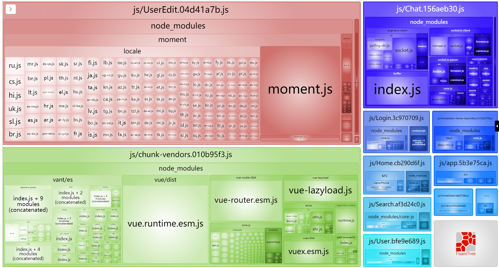

Day08_知识扩展-打包部署
# 1.知识点_vue模拟v-model实现
# 目标
- 探究v-model到底如何实现的双向数据绑定
# 步骤
新建src/components/Add组件, 准备实现双向数据绑定
<template> <div> <p>子组件库存: {{ value }}</p> <button @click="addFn">增加+1</button> </div> </template> <script> export default { props: { value: { type: Number, default: 0 } }, methods: { addFn () { this.$emit('input', this.value + 1) } } } </script>在App.vue, 准备变量传入组件中
<template> <div> <span>父组件库存: {{ count }}</span> <hr> <!-- <AddBtn :value="count" @input="val => count = val"></AddBtn> --> <AddBtn v-model="count"></AddBtn> </div> </template> <script> import AddBtn from '@/components/Add' export default { data () { return { count: 10 } }, components: { AddBtn } } </script> <style> </style>
# 小结
- v-model实际上实现的是什么?
- 向标签内的value属性赋值
- 给标签绑定input事件, 并把收到的值, 赋予给vue变量
原生JS又如何才能实现同样效果呢? https://www.bilibili.com/video/BV1wL411W7KQ 可以看这里哦
# 2.知识点_RestFul API规范
# 目标
- 了解什么是RestFulAPI规范
# 讲解
// RestFul API规范
// 规范(可遵守, 可不遵守, 尽量遵守)
// 规定了 后台的url接口地址风格
// 具体: 相同url路径, 不同的请求方式, 代表不同动作
// 以前接口样子: 杂乱无章
// /v1_0/likingcomment
// /v1_0/dislikingcomment
// /v1_0/delcomment
// 有规范接口
// /api/book --- GET 获取所有图书
// /api/book/:id --- GET 获取指定图片信息
// /api/book --- POST 添加图书
// /api/book/:id --- PUT 修改图书信息(全部)
// /api/book/:id --- PATCH 修改图书信息(部分)
// /api/book/:id --- DELETE 删除图书
# 小结
什么是RestFul 接口规范?
他叫表现层状态转化
相同的路径, 不同的请求方式, 代表不同的动作
# 3.知识点_vuecli开发环境-做代理服务器
# 目标
- 回顾什么是跨域
- 跨域的几种解决方案是什么
# 回顾
什么是跨域:
- 网页所在url的协议, 域名, 端口号, 和Ajax请求url的协议, 域名, 端口号有一个对应不上, 就发生跨域
- 跨域是浏览器对ajax做出的限制
演示用axios请求网易新闻地址, 发现跨域报错
http:/nc/article/headline/T1348647853363/0-40.html
# jsonp方式
需要前端和后端同时支持
前端用script+src属性, 发送函数名给后台, 同时准备好同名的函数, 准备接收数据
后端返回的字符串一定用方法名(数据字符串)格式返回, 到script标签中执行
调用函数名, 并传递数据
例子代码(看看就行, 不用尝试)
<script> function callBackFn(data){ // data就是'{"a": 10, "b": 20}' } </script> <script src="http://后台接口地址?callback=callBackFn"></script> <!-- 后台接口返回 'callBackFn({"a": 10, "b": 20})' -->
# cors方式
前端什么也不用做
后端需要开启cors
实际上就是在响应头添加允许跨域的源
Access-Control-Allow-Origin: 字段和值(意思就是允许去哪些源地址去请求这个服务器)
# 代理转发
如果后端jsonp也不弄, cors也不弄, 就给你个接口地址
我们可以在本地弄个服务器, 然后用服务器请求后台服务器接口地址

但是vuecli脚手架, 启动了一个webpack开发服务器, 它就能做代理转发
- 而且前端和这个服务器是同源的都是8080端口
需要修改webpack开发服务器的配置即可
更多配置项参考这里: https://webpack.docschina.org/configuration/dev-server/#devserverproxy
devServer: { proxy: { // http://c.m.163.com/nc/article/headline/T1348647853363/0-40.html '/api': { // 请求相对路径以/api开头的, 才会走这里的配置 target: 'http://c.m.163.com', // 后台接口域名 changeOrigin: true, // 改变请求来源(欺骗后台你的请求是从http://c.m.163.com) pathRewrite: { '^/api': '' // 因为真实路径中并没有/api这段, 所以要去掉这段才能拼接正确地址转发请求 } } } }axios请求的代码
axios({ url: '/api/nc/article/headline/T1348647853363/0-40.html' })
# 小结
- 跨域几种解决方案?
- jsonp / cors / 代理转发
- vuecli环境如何设置代理转发?
- 在vue.config.js - 添加规则和配置
# 4.知识点_发布工具包
# 目标
- 一个项目下来, 自己用原生js, 封装了些工具
- 发布这些工具到npm网站
- 以后换电脑, 直接npm/yarn下载即可
# 步骤-准备
新建文件夹, 并初始化包环境npm init
得到package.json文件
重要: ==包名, 入口==
把要发布的js文件拿过来
基于原生js的最好, 任何项目通用的代码, 都可以
- date.js里基于dayjs的
- directives.js里基于vue的
下载包, npm install dayjs vue
创建index.js(package.json记录入口文件名字统一), 然后把其他模块的方法统一导入并导出
// 包的唯一出口 export * from './date' // 基于dayjs的时间处理 export * from './directives' // 基于vue的自定义指令 export * from './storage' // 原生js封装storage存储 export * from './str' // 原生js封装字符串高亮
# 步骤-发布
切换本机npm镜像地址
注意npm镜像笔记切换到原来的才能发布工具包
npm config set registry=https://registry.npmjs.org/查看npm镜像地址命令: npm config get registry
去https://www.npmjs.com/ 这个网站注册账号
一定要用能登录上去的邮箱
一定要去邮箱里有一封验证, 点击链接激活
一定切记账号和密码和邮箱, 发布包使用
在发布包的文件夹下cmd终端
命令: npm login
作用: 建立登录链接
输入上一步注册的账号和密码和邮箱
终端为了防止密码被偷窥, 不会提示, 但实际上已经输入进去了
命令: npm publish
作用: 发布所在文件夹这个包上去
出现这个图就代表成功了, 如果报错请到这里查看报错解决方案:
http://lidongxuwork.gitee.io/error/
# 验证
去npmjs网站查看

也可以到任何一个地方, 用npm / yarn 下载刚才你发布的包名
这样全世界的程序员都可以下你的包了, 快去让你同桌小伙伴下载试试吧
# 小结
- 为何要发布包?
- 可以提高自己知名度, 方便下个项目直接下载使用
- 如果以后更新了, 重新发布?
- 把js文件放到本地包文件夹里, 在index.js统一导出
- 把package.json的版本向前改(因为每个版本号只能用一次)
# 扩展
包开发环境和生产环境到底有什么区别?
可以看这里: https://www.bilibili.com/video/BV15M4y1u78F
# 5.知识点_删除工具包
# 目标
- 如果感觉名字不好想删除
# 步骤
重点警告: 如果你的包已经被很多人使用了, 你删除后, 别人无法再下载
运行npm unpublish命名
npm unpublish 包名 --force
这里我随便找个我自己的包删除
但是要注意
- 再次发布的包名或版本, 和刚才发布的不能完全一致
# 小结
- 如何撤销发布的工具包
- 只能对自己发布的包, 执行npm unpublish命令
# 6.项目打包_开始
# 目标
- yarn serve 是启动开发环境的服务器 (编写代码过程查看效果用)
- yarn build 也是打包项目代码(但是会输出到dist文件夹下)
# 分析
你可以直接把webpack开发服务器部署到线上服务器, 但是不要那么干. 因为有热更新和转换代码的过程, 慢
建议让webpack打包出dist文件夹, 把dist静态文件夹发给后台/运维, 部署到公司服务器上
# 步骤
脚手架工程中运行
命令:
npm run build作用：用vue-cli内部集成的webpack，把.vue,.less.js 等打包成浏览器可直接执行的代码。
结果：会在项目根目录下创建 /dist目录，在这个目录下产出打包后的结果。
讲解: css / js里重点文件讲解

app.hash值.js ：主入口
app.hash值.js.map: 记录当前的.js文件, 打包之前对应代码位置, 有利于代码出错快速找到源代码的位置。
(webpack把所有代码都压缩成一行了, 报错肯定在第一行不方便查找)
模块名.hash值.js - 模块里写的js代码
component: () => import('../views/search/index.vue')，在打包时，就会生成对应的chunk片段文件chunk-vendors：第三方包的代码统一放在这里（dayjs,vue,vuex,vue-router,vant）-只要被webpack构建依赖关系发现的包
chunk-hash值.js: 某个第三方模块对应的js ,某个.vue文件编译之后的.js。
# 运行
可以直接用vscode+liveserver插件运行静态网页index.html
哇, 可怕的问题来了, 空白页, 悄悄打开控制, 发现全是路径引入报错
仔细一看, 要的都是服务器根目录下的js / css文件夹里的打包的片段文件
原因: vscode+liveServer插件, 会把vscode打开的根目录当做服务器的根目录, 根目录下并没有js / css文件夹
而且服务器也不会把你的dist里代码放到公司线上服务器根目录
# 解决
只需要让webpack打包时, 把路径弄成相对路径即可咯
在vue.config.js, 第一次对象里添加配置
publicPath: './'
# 小结
打包命令是什么?
- yarn build / npm run build
打包后, 会得到什么?
webpack和各种插件加载器, 把代码翻译后, 输出整合到dist文件夹下
注意: 这时, dist和开发代码环境一毛钱关系都没有了
# 7.项目打包_跨域问题
# 目标
- 为何打包后, 不跨域
# 分析
打包后运行在http://localhost:5500
ajax请求的是http://toutiao.itheima.net
按道理来说, 应该跨域了啊
但是, 后台开启了cors, 所以直接请求
# 注意
如果你的后台没开启cors, 你使用webpack开发服务器来做的代理转发
那么打包后, 与webpack开发服务器没关系了
解决: 自己用node+express搭建一个本地服务器开启cors, 并启动
把自己前端的请求基地址改成这个服务器一起部署到线上
# 小结
- 如果用webpack开发服务器做代理转发, 一定要注意打包后, 就没关系了, 需要自己准备服务器转发
# 8.项目打包_分析-代码高亮(上午结束)
# 目标
- 如何优化打包体积
# 打包结果分析
vuecli中提供一个打包分析的工具
命令: yarn build --report
它会在dist目录下产生一个report.html文件，其中就有对打包结果的分析说明

效果 - 帮助我们分析哪个包的体积过大(针对性优化)
例如只用到一个方法的moment / dayjs 可以删除不要, 换成原生js自己写

# 优化-代码高亮
highlight.js体积过大, 可以让后台给代码标签设置好class类名给我返回
现在的接口已经弄好了
所以把main.js, 这段代码删除掉, 我们只要引入对应样式即可
// import hljs from 'highlight.js' import 'highlight.js/styles/default.css' // 代码高亮的样式 //Vue.directive('highlight', function (el) { // 自定义一个代码高亮指令 // const highlight = el.querySelectorAll('pre, code') // 获取里面所有pre或者code标签 // highlight.forEach((block) => { // hljs.highlightBlock(block) // 突出显示pre和code内标签, 并自动识别语言, 添加类名和样式 // }) //})千万不要忘了, 去文章详情, 把使用的指令删除掉
但是后台没有提前设置类名的pre和code标签就没有了高亮
aid=7997 这个文章提前设置了类名, 所以还是ok的
再次打包观察体积

# 小结
打包分析工具帮助我们找到哪个包体积过大
如果有体积庞大的, 想想针对性的优化 / 换一个工具包使用
# 9.项目打包_分析优化-moment
# 目标
- moment就用了一个格式化时间
# 解决
所以我们只用了其中一个功能, 但是webpack把整个包都打包进dist下了
所以我们可以自己用原生js实现, 格式化时间, 卸载moment包
yarn remove moment
// 时间选择 async confirmFn () { // console.log(this.currentDate instanceof Date) // this.currentDate里值是日期对象 // 但是后台要"年-月-日"格式字符串参数值 console.log(this.currentDate) const year = this.currentDate.getFullYear() let month = this.currentDate.getMonth() + 1 let day = this.currentDate.getDate() month = month < 10 ? '0' + month : month day = day < 10 ? '0' + day : day const dateStr = `${year}-${month}-${day}` await updateProfileAPI({ birthday: dateStr }) // 前端页面同步 this.profile.birthday = dateStr // 时间选择器关闭 this.isShowBirth = false }再次打包观察dist文件夹体积大小
观察报告, 最大的就是vue源码了, 那就没什么可以优化的了
# 小结
- moment作用?
- 格式化时间的, 我们也可以用原生js自己来写, 这样不用打包太多没用的代码
# 10.项目打包_优化-去掉打印
# 目标
- 上线后想让所有打印失效
# 分析
- 如果自己删除, 那开发还得加回来, 注释也一样啊, 麻烦
- 能否配置环境变量, 让代码自己来判断呢
- 先在项目 根目录下配置文件(脚手架环境变量)

在.env.development (开发环境变量)
NODE_ENV 变量名随便起, 值不用加引号就是字符串了
NODE_ENV=development在.env.production (生产上线环境变量)
NODE_ENV=production
在main.js里加入如下配置
if (process.env.NODE_ENV !== 'development') { // process是Node环境全部变量, 运行时根据敲击的命令不同, 脚手架会取环境变量给env添加属性和值 console.log = function () {} console.error = function(){} console.dir = function(){} }
# 小结
- 我们可以在这2个文件里定义不同的属性和值, 来区分线上和线下环境不同的值
- 而且可以让代码自适应在不同环境, 自动选择对应值来使用
# 11.项目部署-gitee
# 目标
部署项目, 得到一个全网可用的url地址
例如: https://lidongxuwork.gitee.io/
# 步骤
- gitee注册账号(有了就忽略这步)
- 新建仓库(空的, ReadME也不要)
- 把dist推送到这个新的仓库上 (开发是一个仓库, 部署是另外一个了)
- 启动gitee提供的page服务 (注意路径会自动找index.html文件来访问给用户看)
- 如果以后代码更新, 要在本地重新打包, 然后重新推到gitee仓库, 还必须更新重启page服务才能生效)
# 小结
- 部署项目, 为了得到一个url地址, 可以在公网中, 大家都可以访问你做的项目
# 12.项目部署-公司自己服务器
# 目标
- 创建一个web服务(如果后端有java/其他, 就把dist文件夹发给后台吧)
- 把整个web服务器+dist, 部署到公司自己服务器
# 步骤
先创建一个本地的服务(用nodejs+express+静态资源文件夹)
// 导入 express 模块 const express = require('express') // 创建 express 的服务器实例 const app = express() // 1. 将 dist 目录托管为静态资源服务器 app.use(express.static('./dist')) // 调用 app.listen 方法，指定端口号并启动web服务器 app.listen(3001, function() { console.log('Express server running at http://127.0.0.1:3001') })在本地访问测试下, 是否可以正确打开vue打包项目页面, ok了再继续下面的
阿里云, 百度云, 腾讯云选择某一家的即可 (尽量赶上过节再去买)
然后购买线上的云服务器 (学生应该什么时候都便宜) 一人打100kb左右计算 (可以预估同时能支持多少人访问) 根据业务选择多大带宽的服务器 (如果就自己玩 越低越好, 越便宜越好)
选择系统可以选择windows / linux(可以按宝塔面板-一键安装软件)
想办法把代码 传到云服务器上 (win: 百度网盘/gitee , linux 有宝塔面板网页一键上传)
线上的云服务器, 开启一个web服务器 (node+express / nginx / apache / 等)
一定要关闭服务器的防火墙(在哪个网站买的, 来到管理页面, 放行端口)
访问ip+端口和路径即可打开线上服务器的这个网站使用了
# 小结
- 租一台云服务器 / 公司自己服务器(需要公网ip能访问 - 如果不能还要研究如何得到一个固定的ip)
- 把web服务部署到服务器上
- 访问服务器ip:web服务端口/路径, 打开对应页面访问
# 扩展
只有ip不行, 如何得到一个域名呢?
可以看这个文档: https://help.aliyun.com/product/35473.html?spm=5176.21213303.J_6028563670.7.d5653edanjoH7j&scm=20140722.S_help%40%40%E4%BA%A7%E5%93%81%E9%A1%B5%40%4035473.S_hot.ID_35473-RL_%E5%9F%9F%E5%90%8D-OR_s%2Bhelpmain-V_1-P0_0
寻找和购买域名(付款) https://wanwang.aliyun.com/domain/?spm=a2c4g.11174283.2.2.46f34c07iCNNPy
域名解析到自己的服务器ip地址上
域名需要备案(注意: 第一次可能需要很多天, 所以请在部署项目之前尽早购买)
以后输入域名跟输入ip一样可以访问你服务器项目了
这里暂时没有域名, 无法演示
# 13.项目打包App
# 目标
- 为何要打包APP
- APP分为哪几种类型
# 分类
App有三大类型
原生的App。手机有两大操作系统：苹果，安卓
还有 windows Phone, 鸿蒙
ios,安卓程序员 用各自的编程语言写的代码，只能在某一个平台上运行。分安卓版本和ios版本。
- 优点：用户体验好 ；可以调用系统API（拍照，读内存...）。
- 缺点：费钱。(大公司一般会雇佣4端程序员)
纯h5网站。就是一个移动站（https://m.jd.com/）
- 优点：省钱。就是网页。
- 缺点：不能调用系统API；没有统一的入口，用户不知道从哪里进来，都要通过浏览器才能访问；
混合开发。
- 先做一个网站，在网站之外套个原生的壳！能同时具备原生的优点和纯h5网站的优点。
- 在原生的App嵌入h5 页
# HBuilder开发版
我们需要借助他, 帮助我们打包一个App
下载安装, 注册激活， 如果不注册激活，就不能使用它的打包功能
下载地址: https://www.dcloud.io/hbuilderx.html (下载App开发版)
先走流程, 提示你注册再注册和激活就行了
==必须注册==
==必须激活邮箱==
==必须绑定手机号==
# 创建5+App项目
我们要选择5+App 项目,mui也是一套前端框架，可以选择一个mui项目。
- 普通项目。 普通H5项目, Hbuilder内置了几套模板,作用不大,同学们基本都会自己创建
- uni-app。多端应用,一套代码,复用八端,时下最火的一个跨端框架
- wap2App。wap项目转 App , 原来只运在手机上的wap(无线网络协议,诺基亚,爱立信时代)项目 可转app项目
- 5+ App。利用DCloud 的 **
5+ Runtime**来做原生能力提供者的 项目 - 小程序。微信原生小程序的另外一个编辑器,比微信提供的开发者工具好用,但是现在谁还在用原生写小程序呢?
- 快应用 。原生快应用编辑器 , 较为冷门的生态, 目前不太热闹
# 准备打包
把我们vue项目打包好的dist下的一切复制到你刚才的项目-覆盖过来即可 (一定要保留manifest.json文件)
mainfest.json是打包配置文件
生成APPID
去掉通信录权限 (因为我的HBuilder没有身份证认证, 打包不让获取用户通讯录)

(可选), 如果上面不小心选择No了, 可以去源码处选择 - 删除
# 云打包
如果一切正常，你将会在控制台中看到类似如下的结果：
这就是云打包成功了, 下面会出现apk下载的所在文件夹
# 运行
把打包好的apk包, 发到安卓手机上 / 电脑模拟器(推荐<夜神模拟器>) 运行即可
# iOS问题
打包ios - 需要申请开发者账号(一年600元人民币): 以后打包的过程参考这个: https://blog.csdn.net/qq_34440345/article/details/99711586
也可以手机给电脑开热点 / 只要连接在同一个wifi下, 手机浏览器访问webpack开发服务器局域网ip地址即可
# 小结
- 借助Hbuilder软件, 打包apk包使用